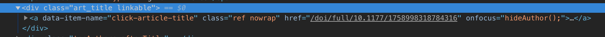

By Martin John Hadley | November 12, 2018
Citable Author
Martin John Hadley
(orcid.org/0000-0002-3039-6849)
Citable Data
Scrapes a delicate URL scheme from SAGE Publishing
 .Rmd on GitHub
.Rmd on GitHubRecently a friend told me they were doing a systematic review of the Hand Therap Journal published by SAGE. They wanted a way to scrape the journal for all publications, without going mad in the process. Seemed like a good excuse to get them motivated to learn R and for me to practice web scraping with the rvest package.
We’ll go through the following steps:
- Generate URLs for all issues of the journal
- Inspect the source code for the page for the DOI
- Scrape all the pages
- Scrape all the pages using parallel processing via the
futurepackage
Let’s load all the packaes we’re going to use up front:
library("tidyverse")
library("rvest")
library("glue")
library("httr")
library("future")URLs for each journal issue
Let’s simplify things and only consider issues of the journal up to the date this blogpost was written (2018-11-12). I can’t guarantee that the journal won’t completely change their URL scheme tomorrow, but until they do change things all issues have the following URL structure:
https://journals.sagepub.com/toc/hthb/{volume}/{issue}There have always been 4 issues a year, and the most recent volume is 23. Let’s setup a tibble() with this data:
issue_urls <- tibble(volume = 1:23, issue_1 = 1, issue_2 = 2, issue_3 = 3, issue_4 = 4)I’ll now use gather() to convert this into a long and tidy dataset that iterates through all issues:
issue_urls <- issue_urls %>%
gather(issue.colname, issue, issue_1:issue_4) %>%
select(-issue.colname) %>%
arrange(volume)Now we can construct our URLs using glue()
issue_urls <- issue_urls %>%
mutate(issue_url = glue("https://journals.sagepub.com/toc/hthb/{volume}/{issue}"))
head(issue_urls)## # A tibble: 6 x 3
## volume issue issue_url
## <int> <dbl> <S3: glue>
## 1 1 1 https://journals.sagepub.com/toc/hthb/1/1
## 2 1 2 https://journals.sagepub.com/toc/hthb/1/2
## 3 1 3 https://journals.sagepub.com/toc/hthb/1/3
## 4 1 4 https://journals.sagepub.com/toc/hthb/1/4
## 5 2 1 https://journals.sagepub.com/toc/hthb/2/1
## 6 2 2 https://journals.sagepub.com/toc/hthb/2/2Inspect the source code for the DOI
Inspecting the source code reveals that the title of each article in the issue has the attribute data-item-name, with the value click-article-title.

Let’s use the most recent issue as a toy example:
"https://journals.sagepub.com/toc/hthb/23/4" %>%
read_html() %>%
html_nodes("[data-item-name=click-article-title]") %>%
html_attrs() %>%
.[[1]]## data-item-name class
## "click-article-title" "ref nowrap"
## href
## "/doi/full/10.1177/1758998318784316"The DOI for the article is almost the href value, there’s some fluff we’ll get rid of later. But we know enough we can create a function for extracting the href value
get_article_dois_from_issue <- function(issue_url) {
issue_page <- tryCatch(issue_url %>%
read_html(),
error = function(c) NA
)
if (is.na(issue_page)) {
return(NA)
}
issue_url %>%
read_html() %>%
html_nodes("[data-item-name=click-article-title]") %>%
html_attr("href")
}"https://journals.sagepub.com/toc/hthb/23/4" %>%
get_article_dois_from_issue()## [[1]]
## [1] "/doi/full/10.1177/1758998318784316"
##
## [[2]]
## [1] "/doi/full/10.1177/1758998318796010"
##
## [[3]]
## [1] "/doi/full/10.1177/1758998318798668"
##
## [[4]]
## [1] "/doi/full/10.1177/1758998318809574"Scrape all the pages
The wonderful purrr package allows us to insert these (almost) DOIs into the rows of our tibble() as follows:
example_dois <- issue_urls %>%
slice(52:54) %>%
mutate(doi = map(issue_url, function(x)get_article_dois_from_issue(x)))## # A tibble: 3 x 4
## volume issue issue_url data
## <int> <dbl> <S3: glue> <list>
## 1 13 4 https://journals.sagepub.com/toc/hthb/13/4 <tibble [3 × 1]>
## 2 14 1 https://journals.sagepub.com/toc/hthb/14/1 <tibble [5 × 1]>
## 3 14 2 https://journals.sagepub.com/toc/hthb/14/2 <tibble [6 × 1]>The unnest() function from tidyr allows us to unpack these list columns
example_dois %>%
unnest(doi)## # A tibble: 14 x 4
## volume issue issue_url doi
## <int> <dbl> <S3: glue> <chr>
## 1 13 4 https://journals.sagepub.com/toc… /doi/pdf/10.1177/1758998…
## 2 13 4 https://journals.sagepub.com/toc… /doi/pdf/10.1177/1758998…
## 3 13 4 https://journals.sagepub.com/toc… /doi/pdf/10.1177/1758998…
## 4 14 1 https://journals.sagepub.com/toc… /doi/full/10.1258/ht.200…
## 5 14 1 https://journals.sagepub.com/toc… /doi/full/10.1258/ht.200…
## 6 14 1 https://journals.sagepub.com/toc… /doi/full/10.1258/ht.200…
## 7 14 1 https://journals.sagepub.com/toc… /doi/full/10.1258/ht.200…
## 8 14 1 https://journals.sagepub.com/toc… /doi/full/10.1258/ht.200…
## 9 14 2 https://journals.sagepub.com/toc… /doi/full/10.1258/ht.200…
## 10 14 2 https://journals.sagepub.com/toc… /doi/full/10.1258/ht.200…
## 11 14 2 https://journals.sagepub.com/toc… /doi/full/10.1258/ht.200…
## 12 14 2 https://journals.sagepub.com/toc… /doi/full/10.1258/ht.200…
## 13 14 2 https://journals.sagepub.com/toc… /doi/full/10.1258/ht.200…
## 14 14 2 https://journals.sagepub.com/toc… /doi/full/10.1258/ht.200…All DOI begin with 10.1 which we can use to tidy up these almost DOI into real DOI:
example_dois %>%
unnest(doi) %>%
mutate(doi = str_replace(doi, ".*/10.", "http://doi.org/10."))## # A tibble: 14 x 4
## volume issue issue_url doi
## <int> <dbl> <S3: glue> <chr>
## 1 13 4 https://journals.sagepub.com/t… http://doi.org/10.1177/175…
## 2 13 4 https://journals.sagepub.com/t… http://doi.org/10.1177/175…
## 3 13 4 https://journals.sagepub.com/t… http://doi.org/10.1177/175…
## 4 14 1 https://journals.sagepub.com/t… http://doi.org/10.1258/ht.…
## 5 14 1 https://journals.sagepub.com/t… http://doi.org/10.1258/ht.…
## 6 14 1 https://journals.sagepub.com/t… http://doi.org/10.1258/ht.…
## 7 14 1 https://journals.sagepub.com/t… http://doi.org/10.1258/ht.…
## 8 14 1 https://journals.sagepub.com/t… http://doi.org/10.1258/ht.…
## 9 14 2 https://journals.sagepub.com/t… http://doi.org/10.1258/ht.…
## 10 14 2 https://journals.sagepub.com/t… http://doi.org/10.1258/ht.…
## 11 14 2 https://journals.sagepub.com/t… http://doi.org/10.1258/ht.…
## 12 14 2 https://journals.sagepub.com/t… http://doi.org/10.1258/ht.…
## 13 14 2 https://journals.sagepub.com/t… http://doi.org/10.1258/ht.…
## 14 14 2 https://journals.sagepub.com/t… http://doi.org/10.1258/ht.…It’s painfully slow going through all 92 issues in this fashion, thankfully it’s fairly easy to run this in parallel with the future package.
Scrape all the pages with future
To begin our work with the future package we must tell it our plan to use multicore evaluation as follows:
plan(multiprocess)We use future() to tell the future package to run according to the plan we just set:
start_scrape <- Sys.time()
scraped_dois <- issue_urls %>%
mutate(dois = map(issue_url, ~future(get_article_dois_from_issue(.x))))
end_scrape <- Sys.time()This whole process hasn’t taken much time (at the time of writing):
end_scrape - start_scrape## Time difference of 1.755138 minsBut our dataset isn’t ready to work with yet, our list column is full of MulticoreFuture things:
scraped_dois
We use the value() function to extract the value of our future calculations and unnest() as previously:
scraped_dois %>%
mutate(dois = map(dois, ~value(.x))) %>%
unnest(dois) %>%
filter(!is.na(dois)) %>%
rename(doi = dois) %>%
mutate(doi = str_replace(doi, ".*/10.", "http://doi.org/10.")) %>%
select(-issue_url)## # A tibble: 459 x 3
## volume issue doi
## <int> <dbl> <chr>
## 1 1 1 http://doi.org/10.1177/175899839600100401
## 2 1 1 http://doi.org/10.1177/175899839600100402
## 3 1 1 http://doi.org/10.1177/175899839600100403
## 4 1 1 http://doi.org/10.1177/175899839600100404
## 5 1 1 http://doi.org/10.1177/175899839600100405
## 6 1 1 http://doi.org/10.1177/175899839600100406
## 7 1 1 http://doi.org/10.1177/175899839600100407
## 8 1 1 http://doi.org/10.1177/175899839600100408
## 9 1 1 http://doi.org/10.1177/175899839600100409
## 10 1 1 http://doi.org/10.1177/175899839600100410
## # … with 449 more rowsThis was the final output my friend needed, all 459 DOI-issued articles from the journal. It was really easy to put all of this together and finally get a chance to use the future package properly. If I was asked how to make this more rigorous I’d recommend the following:
- Programmatically discover the most recent volume and issue
- Don’t assume a max of 4 issues per volume, allow the code to iterate through a volume.
Citable Author
Martin John Hadley
(orcid.org/0000-0002-3039-6849)
Citable Data
Scrapes a delicate URL scheme from SAGE Publishing
See the DOI Handbook DOI: 10.1000/182.↩